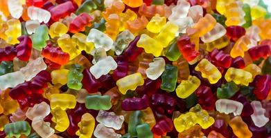
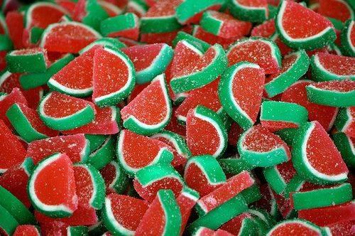
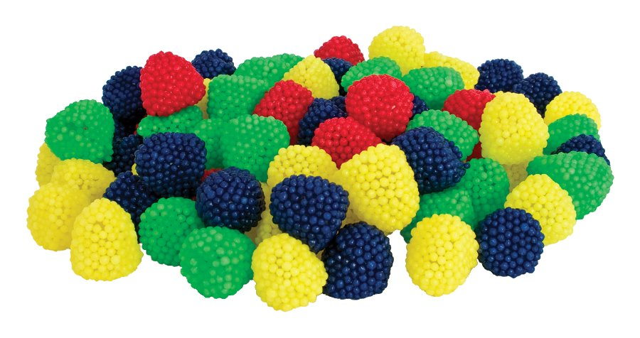

Żelki
Żelki – rodzaj cukierka z galaretki[1]. Żelki wytwarzane są głównie z żelatyny oraz cukru buraczanego, do ich wytwarzania może służyć także agar i pektyny.
W 100 gramach żelek znajduje się przeciętnie 310 kalorii, 71 gramów węglowodanów oraz 6,2 grama białka[2].
Największymi międzynarodowymi producentami żelek są:
Haribo (Złote Misie);
Nestlé (JoJo);
Perfetti Van Melle (Fruittella).
Na polskim rynku znaczącym producentem żelek jest Jutrzenka.
W Polsce dostępne są też ekologiczne żelki owocowe z certyfikatem Sprawiedliwego Handlu, produkowane przez El Puente GmbH, najstarszą organizację Sprawiedliwego Handlu w Niemczech.


